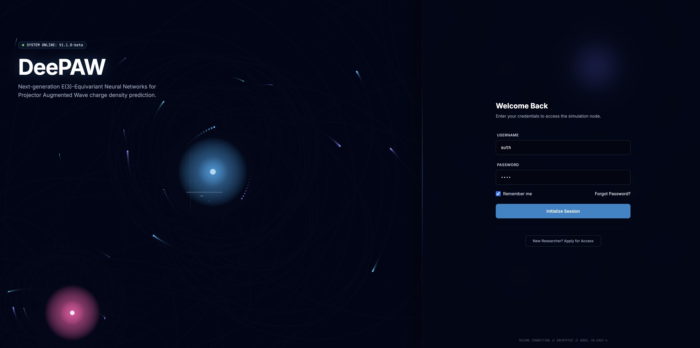
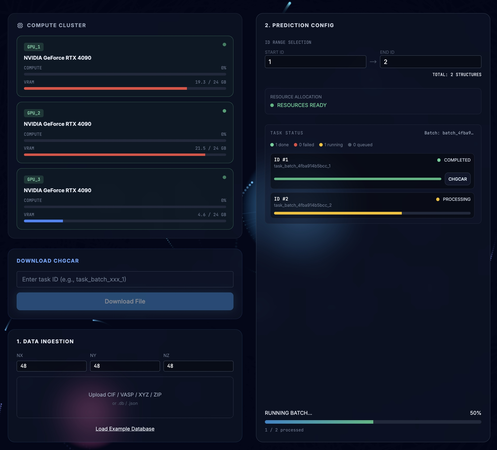
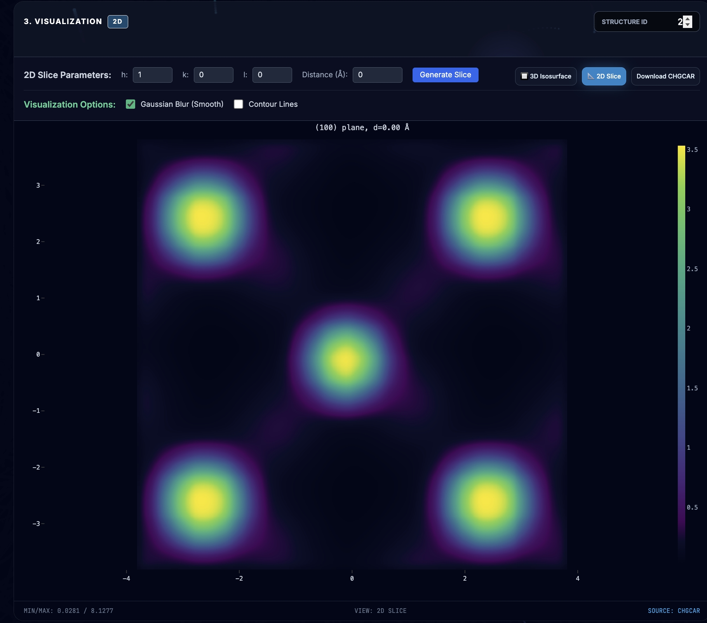
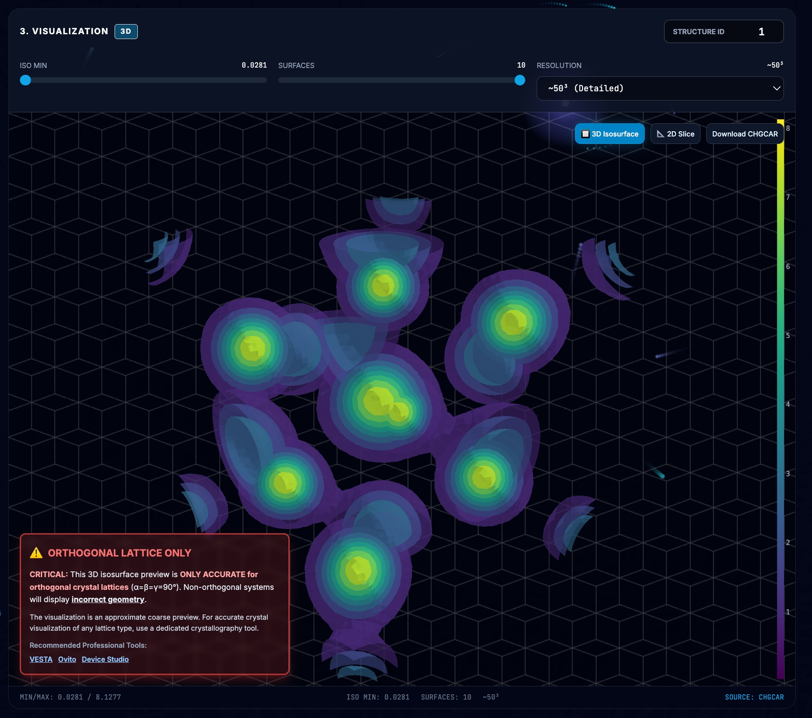
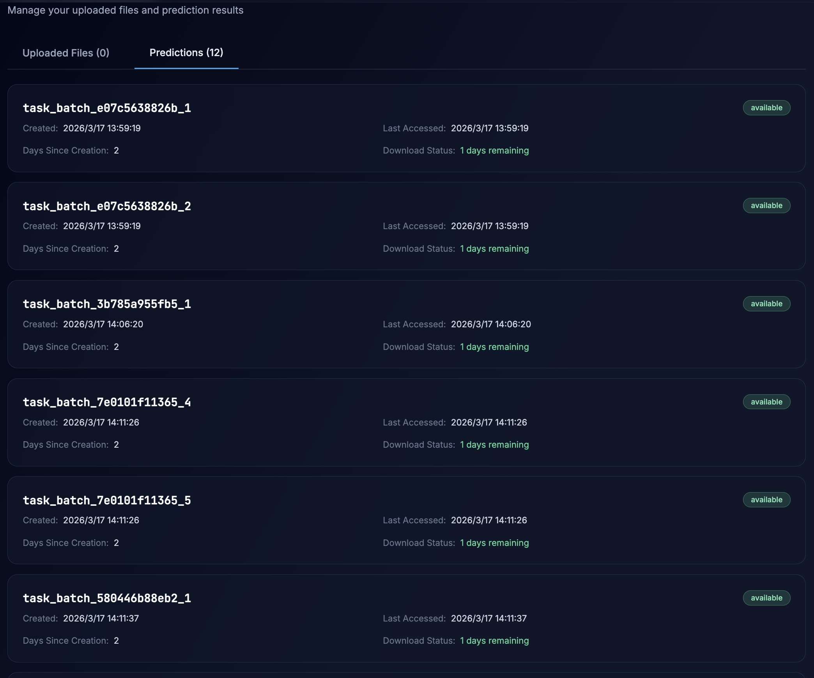

Web 前端应用
DeePAW 提供了一个在线 Web 应用，用户可通过浏览器直接进行电荷密度预测和可视化操作，无需编写任何代码。
访问地址: https://deepaw.tech
本地部署版本可通过 http://localhost:3000 (本地) 或通过 SSH 隧道远程访问。
登录与注册
首次使用需注册账户，注册时需要提供邀请码。
{kind=link}

登录页面，左侧为 DeePAW 品牌介绍，右侧为登录/注册表单
输入用户名、密码和邮箱
填写邀请码 (默认:
deepawdeepaw)注册成功后自动跳转到主界面
已有账户直接输入用户名和密码登录。如忘记密码，可通过邮箱验证码重置。
主界面布局
登录后进入主界面，顶部导航栏包含两个视图切换按钮:
Predictions: 预测工作台 (默认视图)
My Files: 文件与历史管理
右上角显示当前登录用户名和断开连接按钮。
预测工作台 (Predictions)
预测工作台采用三栏布局:
{kind=link}

预测工作台界面: 左栏 GPU 集群状态，中栏文件上传与任务配置，右栏可视化区域
左栏: GPU 集群状态
实时显示各 GPU 的运行状态:
GPU 名称和编号
显存使用量 (已用/总量 MB)
GPU 利用率 (%)
温度
状态指示 (idle/busy)
数据每 5 秒通过 WebSocket 自动刷新。
中栏: 预测任务配置
上传结构文件
点击上传区域选择文件，支持 CIF、VASP、XYZ、PDB 等 15 种格式以及 ZIP/TAR 压缩包。上传时需指定网格维度 nx、ny、nz。
也可点击 "Load Demo" 加载系统内置的演示数据库快速体验。
提交预测
选择结构 ID 范围 (start_id ~ end_id)
点击提交按钮
任务进入 GPU 队列，每个任务卡片实时显示状态:
灰色: pending (等待中)
蓝色: processing (计算中)
绿色: completed (已完成)
红色: failed (失败)
右栏: 可视化
任务完成后，点击对应任务卡片即可在右栏查看预测结果，提供两种可视化模式:
2D 切片 (Slice)
沿指定 Miller 指数 (hkl) 平面的二维电荷密度切片:
{kind=link}

2D 切片视图: 沿 (hkl) 平面的电荷密度分布热力图，支持等高线叠加和高斯模糊
可选择切面方向 (h, k, l)
可调节切面距离 (distance)
支持高斯模糊平滑
支持等高线叠加显示
Viridis 色标映射
3D 等值面 (Isosurface)
基于 Plotly.js 的交互式三维等值面渲染:
{kind=link}

3D 等值面视图: 交互式三维电荷密度渲染，显示晶胞边框和晶格参数
鼠标拖拽旋转视角
滚轮缩放
可调节等值面阈值 (ISO MIN/MAX)
可调节分辨率和等值面层数
显示晶胞边框 (金色线框) 和晶格参数 (a, b, c, alpha, beta, gamma)
文件管理 (My Files)
切换到 "My Files" 视图，管理上传的文件和预测历史:
{kind=link}

My Files 视图: 上传文件列表和预测历史记录，显示下载状态和有效期
上传文件列表
文件名、上传时间
距上传天数
下载状态 (available / expired)
文件下载有效期为 3 天
预测历史
任务 ID、创建时间
CHGCAR 文件路径
下载状态和有效期
性能建议
3D 可视化优化
大型 CHGCAR 文件 (网格 > 48^3) 建议先降低分辨率预览
减少等值面层数可提升浏览器渲染性能
提高 ISO MIN 阈值仅显示高密度区域，减少渲染面片数
浏览器兼容性
推荐使用 Chrome / Edge (Chromium 内核)
需要 WebGL 支持 (用于 Plotly 3D 渲染)
建议屏幕分辨率 >= 1920x1080